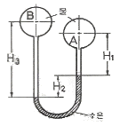
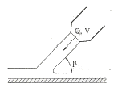
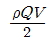
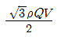
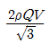
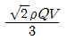

소방설비산업기사(기계) (2015-03-08 기출문제)
1과목: 소방원론
1. 다음 중 착화온도가 가장 높은 물질은?
- 황린
- 아세트알데히드
- 메탄
- 아황화탄소
(정답률: 50%)

2. 가연성 물질이 되기 위한 조건으로 틀린 것은?
- 열전도율이 작아야 한다.
- 공기와 접촉면적이 커야 한다.
- 산소와 친화력이 커야 한다.
- 활성화에너지가 커야 한다.
(정답률: 78%)
3. 실내 연기의 이동속도에 대한 일반적인 설명으로 가장 적절한 것은?
- 수직으로 1m/s, 수평으로 5m/s 정도이다.
- 수직으로 3m/s, 수평으로 1m/s 정도이다.
- 수직으로 5m/s, 수평으로 3m/s 정도이다.
- 수직으로 7m/s, 수평으로 3m/s 정도이다.
(정답률: 77%)
4. Halon 1211의 화학식으로 옳은 것은?
- CF2BrCl
- CFBrCl2
- C2F4Br2
- CH2BrCl
(정답률: 84%)
5. 피난대책의 일반적 원칙으로 틀린 것은?
- 2방향의 피난통로를 확보한다.
- 피난경로는 간단 명료하게 한다.
- 피난설비는 고정설비를 위주로 설치한다.
- 원시적인 방법보다는 전자설비를 이용한다.
(정답률: 85%)
6. 다음 소화약제의 주성분 중 담홍색 또는 황색으로 착색하여 사용하도록 되어있는 소화약제는?
- 탄산나트륨
- 제1인산암모늄
- 탄산수소나트륨
- 탄산수소칼륨
(정답률: 77%)
7. 장기간 방치하면 습기, 고온 등에 의해 분해가 촉진되고 분해열리 축적되면 자연발화 위험성이 있는 것은?
- 셀룰로이드
- 질산나트륨
- 과망간산칼륨
- 과염소산
(정답률: 83%)
8. 0℃의 얼음 1g이 100℃의 수증기가 되려면 몇 cla의 열량이 필요한가? (단, 0℃ 얼음이 융해열은 80cal/g 이고 100℃ 물의 증발잠열은 539cal/g 이다.)
- 539
- 719
- 939
- 1119
(정답률: 78%)
9. 칼륨이 물과 작용하면 위험한 이유로 옳은 것은?
- 물과 격렬히 반응하여 가연성의 수소가스를 발생하기 때문
- 물과 격렬히 반응하고 가연성의 일산화탄소를 생성하기 때문
- 물과 흡열반응하며 유독성 가스를 생성하기 때문
- 물과 흡열반응하며 자기연소가 서서히 진행되기 때문
(정답률: 84%)
10. 인화성 액체의 소화방법으로 틀린 것은?
- 공기차단 또는 연소물질을 제거하여 소화한다.
- 포말, 분말, 이상화탄소, 할로겐화문소화제 등을 사용한다.
- 알코올과 같은 수용성 위험물은 특수한 안정제를 가한 포소화약제등을 사용한다.
- 물, 건조사 및 금속화재용 분말소화기를 사용하여 소화한다.
(정답률: 64%)
11. 소방시설의 분류에서 다음 중 소화설비에 해당하지 않는 것은?
- 스프링클러설비
- 물분무소화설비
- 옥내소화전설비
- 연결송수관설비
(정답률: 82%)
12. 점화원의 형태별 구분 중 화학적 점화원이 종류로 틀린 것은?
- 연소열
- 용해열
- 분해열
- 아크열
(정답률: 81%)
13. 프로판 가스 44g을 공기 중에 완전연소 시킬 때 표준상태를 기준으로 약 몇 L의 공기가 필요한가? (단, 가연가스를 이상기체로 보며, 공기는 질소 80%와 산소 20%로 구성되어 있다.)
- 112
- 224
- 448
- 560
(정답률: 44%)
14. 정전기 화재사고의 예방대책으로 틀린 것은?
- 제전기를 설치한다.
- 공기를 되도록 건조하게 유지시킨다.
- 접지를 한다.
- 공기를 이온화한다.
(정답률: 77%)
15. B급 화재는 다음 중 어떤 화재를 의미하는가?
- 금속화재
- 일반화재
- 전기화재
- 유류화재
(정답률: 86%)
16. 할로겐화합물 소화약제의 주된 소화원리에 해당하는 것은?
- 연쇄반응의 억제
- 흡열 산화반응
- 분해ㆍ냉각 작용
- 흡착에 의한 승화작용
(정답률: 78%)
17. 요리용 기름이나 지방질 기름의 화재 시 가연물과 결합하여 비누화 반응을 일으켜 질식소화와 재발화 억제효과를 나타낼 수 있는 것은?
- Halon 104
- 물
- 이산화탄소소화약제
- 1종 분말소화약제
(정답률: 75%)
18. 과산화수소의 성질로 틀린 것은?
- 비중이 1보다 작으며 물에 녹지 않는다.
- 산화성물질로 다른 물질을 산화시킨다.
- 불연성 물질이다.
- 상온에서 액체이다.
(정답률: 55%)
19. 위험물안전관리법령상 위험물의 유별 성질에 관한 연결 중 틀린 것은?
- 제2류 위험물 : 가연성 고체
- 제4류 위험물 : 인화성 액체
- 제5류 위험물 : 자기반응성 물질
- 제6류 위험물 : 산화성 고체
(정답률: 81%)
20. 다음 물질 중 연소범위가 가장 넓은 것은?
- 아세틸렌
- 메탄
- 프로판
- 에탄
(정답률: 77%)
2과목: 소방유체역학
21. 다음 시차 압력계에서 압력차 (PB-PA)는 약 몇 kPa 인가? (단, H1=25cm, H2=20cm, H3=70cm 이고 수음의 비중은 13.6이다.)

- 1.1
- 2.2
- 11.1
- 22.2
(정답률: 47%)
22. 물이 안지름 600mm의 파이프를 통하여 평균 3m/s의 속도로 흐를 때, 유량은 약 몇 m3/s 인가?
- 0.3
- 0.85
- 1.8
- 2.8
(정답률: 64%)
23. 기체가 1kg/s의 유속으로 파이프 속을 등온상태로 흐른다. 파이프 내경이 20cm이고 압력이 294Pa 일 때 유속은 약 몇 m/s 인가? (단, 기체상수는 196Nㆍm/kgㆍK이고, 온도는 27℃이다.)
- 5260
- 5290
- 6290
- 6366
(정답률: 33%)
24. 이상유체의 정의를 바르게 설명한 것은?
- 오염되지 않은 순수한 유체
- 뉴턴의 점성법칙을 만족하는 유체
- 압축을 가하면 체적이 수축하고 압력을 제거하면 처음 체적으로 되돌아가는 유체
- 유체유동시 마찰 전단응력이 발생하지 않으며 분자간에 분자력이 작용하지 않는 유체
(정답률: 62%)
25. 온도 차이가 큰 2개의 물체를 접촉시키면 열은 고온의 물체에서 저온의물체로 전달된다. 이때 한 상태에서 다른 상태로 변화할 때의 계의 엔트로피의 변화는? (단, △sH는 고온부 엔트로피 변화, △sL은 저온부 엔트로피 변화이다.)
- △sH>0
- △sL<0
- △sH+△sL<0
- △sH+△sL>0
(정답률: 48%)
26. 안지름이 15cm인 직원형관 속을 4.5m/s의 평균속도로 물이 흐르고 있다. 관 길이가 30m 일 때 수두손실이 5m라면 이 관의 마찰계수는 얼마인가?
- 0.024
- 0.032
- 0.⑤2
- 0.061
(정답률: 48%)
27. 수두가 9m 일 때 오리피스에서 물의 유속이 11m/s이다. 속도계수는 약 얼마인가?
- 0.81
- 0.83
- 0.95
- 0.97
(정답률: 48%)
28. 수격현상을 줄이기 위한 방법으로 틀린 것은?
- 관내 유속을 높여야 한다.
- 관로에 서지탱크를 설치한다.
- 펌프에 플라이 휠을 설치한다.
- 밸브를 가능한 펌프 송출구 가까이 설치한다.
(정답률: 64%)
29. 지름이 5mm 인 모세관에서 물의 상승높이는 몇 mm인가? (단, 접촉각은 40°, 표면장력은 7.41×10-2N/m 이다.)
- 0.46
- 4.6
- 469
- 460
(정답률: 52%)
30. 다음 중 회전식 펌프에 해당되는 것은?
- 기어 펌프(gear pump)
- 피스톤 펌프(piston pump)
- 플런저 펌프(plunger pump)
- 다이어프램 펌프(diaphragm pump)
(정답률: 56%)
31. 밀도 ρ, 체적유량 Q, 속도 V의 물 분류가 그림과 같이 β=30°의 각도로 고정평판에 충돌할 때 분류에 의해 판이 받는 수직충격력은?





(정답률: 55%)
32. 고체 표면의 온도가 20℃에서 60℃로 올라가면 방사되는 복사열은 약 몇 % 가 증가하는가?
- 3
- 14
- 29
- 67
(정답률: 41%)
33. 다음 중 수력지름이 가장 큰 것은? (단, 모든 덕트나 관은 완전히 채워져 흐른다고 가정한다.)
- 지름 5cm인 원형 덕트
- 한 변이 5cm인 정사각형 덕트
- 가로 4cm, 세로 7cm인 직사각형 덕트
- 바깥지름 10cm, 안지름 5cm인 동심 이중관
(정답률: 65%)
34. 효율이 55%인 원심 펌프가 양정 30m, 유량 0.2m3/s의 물을 송출하기 위한 축동력은 약 몇 kW인가?
- 11
- 32
- 59
- 107
(정답률: 55%)
35. 비중이 1.03인 바닷물에 전체 부피의 90%가 잠겨 있는 빙산이 있다. 이 빙산의 비중은 얼마인가?
- 0.927
- 0.932
- 0.939
- 0.945
(정답률: 69%)
36. 20℃ 100kPa의 공기 1kg를 일차적으로 300kPa 까지 등온압축 시키고 다시 1000kPa까지 단열압축 시켰다. 압축 후의 절대온도는 약 얼마인가?
- 413K
- 426K
- 433K
- 443K
(정답률: 31%)
37. 피토관을 물이 흐르는 관속에 넣었을 때 10cm의 높이까지 올라가 정지되었다. 관의 단면적이 0.⑤m2 이라면 1분 동안 흘러간 물은 몇 m3 인가?
- 4.2
- 4.9
- 5.2
- 5.9
(정답률: 36%)
38. 정지유체 속에 잠겨있는 경사진 평면의 압심(압력의 작용점)에 대한 설명으로 옳은 것은?
- 도심의 아래에 있다.
- 도심의 위에 있다.
- 도시믜 위치와 같다.
- 도심의 위치와 관계가 없다.
(정답률: 71%)
39. 단면 크기가 가로 0.3m, 세로 0.5m 인 덕트 속을 공기가 흐르고 있다. 덕트 속에 흐르는 공기의 유량이 0.45m3/s 일 때 공기의 질량유량은 몇 kg/s 인가? (단, 공기의 밀도는 2kg/m3이다.)
- 0.7
- 0.8
- 0.9
- 1
(정답률: 54%)
40. 유체의 밀도 A는 kg/m3, 점성계수 B는 Nㆍs/m2, 동점성계수 C는 m2/s, 속도기울기(du/dy) D는 s-1이고, A, B, C, D의 수치가 각각 다은과 같을 때 전단응력이 가장 작은 것은?
- A=1000, B=0.002, D=0.1
- A=1200, B=0.01, D=0.1
- A=1000, B=5×10-6, D=0.2
- A=1200, B=1×10-5, D=0.1
(정답률: 31%)
3과목: 소방관계법규
41. 특정소방대상물에 사용되는 방염대상물품이 아닌 것은?
- 암막ㆍ무대막
- 창문에 설치하는 커튼류
- 전시용 합판
- 종이벽지
(정답률: 75%)
42. 소방기관이 소방업무를 수행하는 데에 필요한 인력과 장비 등에 관한 기준은 어느 령으로 정하는가?(과련규정 개정 전 문제로 기존 정답은 2번이었습니다. 여기서는 2번을 누르면 정답 처리됩니다. 자세한 내용은 해설을 참고 하세요)
- 대통령령
- 총리령
- 시ㆍ도의 조례
- 국토교통부장관령
(정답률: 74%)
43. 소방시설공사업 등록신청 시 제출하여야 할 자산평가액 또는 기업진단보고서는 신청일 전 최근 며칠 이내에 작성한 것이어야 하는가?
- 90일
- 120일
- 150일
- 180일
(정답률: 72%)
44. 소방시설업의 업종별 등록기준 및 영업범위 중 소방시설 설계업에 대한 설명으로 틀린 것은? (단, 제연설비가 설치되는 특정소방대상물은 제외한다.)
- 일반소방시설설계업의 보조 기술인력은 1인 이상이다.
- 전문소방시설설계업의 주된 기술인력은 소방기술사 1인 이상이다.
- 일반소방시설설계업의 경우 소방설비기사도 주된 기술인력이 될 수 있다.
- 일반소방시설설계업의 영업범위는 연면적 50000m2 미만의 특정소방대상물에 설치되는 소방시설의 설계를 할 수 있다.
(정답률: 39%)
45. 소방기본법에서 국민의 안전의식과 화재에 대한 경각심을 높이고 안전문화를 정착시키기 위하여 소방의 날로 정하여 기념행사를 하는 날은 언제인가?
- 매년 9월 11일
- 매년 10월 20일
- 매년 11월 9일
- 매년 12월 1일
(정답률: 75%)
46. 소방관계법령에서 정한 연소 우려가 있는 건축물의 구조의 기준으로 해당되지 않는 것은?
- 건축물대장의 건축물 현황도에 표시된 대지경계선 안에 2 이상인 건축물이 있는 경우
- 건축물의 내장재가 가연물인 경우
- 각각의 건축물이 2층 이상으로 다른 건축물 외벽으로부터 수평거리가 10m 이하인 경우
- 개구부가 다른 건축물을 향하여 설치되어 있는 경우
(정답률: 33%)
47. 화재 예방상 위험하다고 인정되는 행위를 하는 사람이나 소화활동에 지장이 있다고 인정되는 물건의 소유자 등에게 금지 또는 제한, 처리 등의 명령을 할 수 있는 사람은?
- 소방본부장
- 의무소방관
- 소방대장
- 시ㆍ도지사
(정답률: 42%)
48. 산업안전기사 또는 산업안전산업기사 자격을 취득한 후 몇 년 이상 2급 소방안전관리대상물의 소방안전관리자로 근무한 실무경력이 있는 사람인 경우 1급 소방안전관리 대상물의 소방안전관리자로 선임할 수 있는가?
- 1년 이상
- 1년 6개월 이상
- 2년 이상
- 3년 이상
(정답률: 63%)
49. 건축허가 등을 할 때 소방본부장 도는 소방서장의 동의를 미리 받아야 하는 대상이 아닌 것은?
- 연면적 200m2 이상인 노유자시설 및 수련시설
- 항공기격납고, 관망탑
- 차고ㆍ주차장으로 사용되는 층 중 바닥면적이 100m2 이상인 층이 있는 시설
- 지하층 또는 무창층이 있는 건축물로서 바닥면적이 150m2 이상인 층이 있는 것
(정답률: 59%)
50. 아파트로 층수가 20층인 특정소방대상물에서 스프링클러설비를 하여야 하는 층수는? (단, 아파트는 신축을 실시하는 경우이다.)
- 6층 이상
- 11층 이상
- 15층 이상
- 전층
(정답률: 67%)
51. 칼륨, 나트륨, 알킬알루미늄 등과 같은 위험물의 성질은?
- 산화성 고체
- 자기반응성 물질
- 자연발화성 물질 및 금수성 물질
- 인화성 액체
(정답률: 74%)
52. 정당한 사유 없이 소방특별조사 결과에 따른 조치명령을 위반한 자에 대한 벌칙으로 옳은 것은?
- 200만원 이하의 과태료
- 300만원 이하의 벌금
- 1년 이하의 징역 또는 1000만원 이하의 벌금
- 3년 이하의 징역 또는 1500만원 이하의 벌금
(정답률: 38%)
53. 함부로 버려두거나 그냥 둔 위험물의 소유자ㆍ관리자ㆍ점유자의 주소와 성명을 알 수 없어 필요한 명령을 할 수 없는 때에 소방본부장 또는 소방서장이 취하여야 하는 조치로 옳은 것은?
- 시ㆍ도지사에게 보고하여야 한다.
- 경찰서장에게 통보하여 위험물을 처리하도록 하여야 한다.
- 소속공무원으로 하여금 그 위험물을 옮기거나 치우게 할 수 있다.
- 소유자가 나타날 때까지 기다린다.
(정답률: 71%)
54. 소방시설공사업법에 따른 총리령으로 정하는 수수료 등의 납부 대상으로 틀린 것은?
- 소방시설업의 기술자 변경신고를 하려는 사람
- 소방시설업을 등록하려는 사람
- 소방시설업자의 지위승계 신고를 하려는 사람
- 소방시설업 등록증을 재발급 받으려는 사람
(정답률: 48%)
55. 물분무등소화설비를 설치하여야 하는 특정소방대상물이 아닌 것은?
- 주차용 건축물로서 연면적 800m2 이상인 것
- 기계식 주차장치를 이용하여 20대 이상의 차량을 주차할 수 있는 것
- 전산실로서 바닥면적 300m2 이상인 것
- 항공기부품공장으로 연면적 100m2 이상인 것
(정답률: 49%)
56. 소방안전관리대상물의 관계인이 소방안전관리자를 선임한 때에는 선임한 날부터 며칠 이내에 관할 소방본부장 또는 소방서장에게 신고하여야 하는가?
- 7일
- 14일
- 21일
- 30일
(정답률: 66%)
57. 문화재보호법의 규정에 의한 유형문화재와 지정문화재에 있어서는 제조소 등과의 수평거리를 몇 이상 유지하여야 하는가?
- 20
- 30
- 50
- 70
(정답률: 66%)
58. 업무상 과실로 제조소 등에서 위험물을 유출ㆍ방출 또는 확산시켜 사람의 생명ㆍ신체 또는 재산에 대하여 위험을 발생시킨 사람에 해당하는 벌칙 기준은?(관련 규정 개정전 문제로 여기서는 기존 정답인 4번을 누르면 정답 처리됩니다. 자세한 내용은 해설을 참고하세요.)
- 5년 이하의 금고 또는 1000만원 이하의 벌금
- 5년 이하의 금고 또는 2000만원 이하의 벌금
- 7년 이하의 금고 또는 1000만원 이하의 벌금
- 7년 이하의 금고 또는 2000만원 이하의 벌금
(정답률: 59%)
59. 화재예방과 화재 등 재해발생시 비상조치를 위하여 관계인이 예방규정을 정하여야 하는 제조소 등의 기준으로 틀린 것은?
- 이송취급소
- 지정수량 10배 이상의 위험물을 취급하는 제조소
- 지정수량 100배 이상의 위험물을 저장하는 옥외저장소
- 지정수량 150배 이상의 위험물을 저장하는 옥외탱크저장소
(정답률: 67%)
60. 소방대라 함은 화재를 진압하고 화재, 재난ㆍ재해 그 밖의 위급한 상황에서의 구조ㆍ구급활동 등을 하기 위하여 구성된 조직체를 말한다. 그 구성원으로 틀린 것은?
- 소방공무원
- 소방안전관리원
- 의무소방원
- 의용소방대원
(정답률: 65%)
4과목: 소방기계시설의 구조 및 원리
61. 피난기구의 설치 기준에 관한 설명으로 틀린 것은?
- 피난기구는 계단, 피난구 등으로부터 적당한 거리에 있는 안전한 구조로 소화활동상 유효한 개구부에 고정하여 설치할 것
- 미끄럼대는 안전한 가하속도를 유지하도록 하고, 전략방지를 위한 안전조치를 할 것
- 4층 이상의 층에 피난사다리를 설치하는 경우에는 금속성 고정사다리를 설치할 것
- 피난기구를 설치하는 개구부는 서로 동일직선상의 위치에 있을 것
(정답률: 57%)
62. 소화기구인 대형소화기를 설치하여야 할 특정소방대상물에 옥내소화전설비가 법적으로 유효하게 설치된 경우 당해 설비의 유효범위안의 부분에 대한 대형소화기 감소기준은?
- 1/3을 감소할 수 있다.
- 1/2을 감소할 수 있다
- 2/3을 감소할 수 있다
- 설치하지 않을 수 있다.
(정답률: 66%)
63. 포소화설비의 개방밸브 중 수동식 개방밸브의 설치 위히 기준으로 가장 적합한 것은?
- 방유제 내에 설치
- 펌프실 또는 송액 주배관으로부터의 분기점 내에 설치
- 방호 대상물마다 절환되는 위치 이전에 설치
- 화재 시 쉽게 접근할 수 있는 곳에 설치
(정답률: 69%)
64. 상수도소화용수설비의 화재안전기준에서 소화전은 특정소방대상물 수평투영면의 각 부분으로부터 몇 이하가 되도록 설치해야 하느가?
- 120m
- 130m
- 140m
- 150m
(정답률: 72%)
65. 배출 풀도단면의 긴 변 또는 직경의 크기가 450mm 초과 750mm 이하일 경우의 강판 두께는 최소 몇 mm 이상 이어야 하는가?
- 0.5
- 0.6
- 0.8
- 1.0
(정답률: 49%)
66. 청정소화약제의 저장용기 설치기준으로 틀린 것은?
- 저장용기의 약제량 손실이 10%를 초과하거나 압력손실이 10%를 초과할 경우에는 재충전하거나 저장용기를 교체할 것
- 직사광선 및 빗물이 침투할 우려가 없는 곳에 설치할 것
- 온도가 55℃ 이하이고 온도 변화가 작은 곳에 설치할 것
- 방호구역 외에 설치한 경우에는 방화문으로 구획된 실에 설치할 것
(정답률: 53%)
67. 피난기구의 화재안전기준 중 피난기구 종류로 옳은 것은?
- 공기안전매트
- 방열복
- 공기호흡기
- 인공소생기
(정답률: 78%)
68. 간이스프링클러설비의 화재안전기준에 따라 펌프를 이용하는 가압송수장치를 설치하는 경우에 있어서의 정격토출압력은 가장 먼 가지배관에서 2개의 간이헤드를 동시에 개방할 경우 간이헤드 선단의 방수압력은 몇 MPa 이상인가?
- 0.1
- 0.35
- 1.4
- 3.5
(정답률: 53%)
69. 분말소화설비에서 저장용기의 내부압력이 설정압력으로 되었을 때 주 밸브를 개방하기 위해 저장용기에 설치하는 것은?
- 정압작동장치
- 체크밸브
- 압력조정기
- 선택밸브
(정답률: 70%)
70. 전동기 또는 내연 기관에 따른 펌프를 이용하는 가압 송수장치의 설치기준에 있어 당해 소방대상물에 설치된 옥외소화전을 동시에 사용하는 경우 각 옥외소화전의 노즐선단에서의 ㉠방수압력과 ㉡방수량으로 옳은 것은?
- ㉠ 0.25MPa 이상, ㉡ 350ℓ/min 이상
- ㉠ 0.17MPa 이상, ㉡ 350ℓ/min 이상
- ㉠ 0.25MPa 이상, ㉡ 100ℓ/min 이상
- ㉠ 0.17MPa 이상, ㉡ 100ℓ/min 이상
(정답률: 64%)
71. 물분무소화설비를 설치한 차고, 주차장의 배수설비 중 배수구에서 새어나온 기름을 모아 소화할 수 있도록 길이 몇 m 이하마다 집수관ㆍ소화핏트 등 기름분리장치를 설치하여야 하는가?
- 10
- 40
- 50
- 100
(정답률: 67%)
72. 상수도소화용수설비의 설치기준으로 틀린 것은?
- 상수도소화용수설비는 수도법의 규정을 따른다.
- 소화전은 소방자동차 등의 진입이 쉬운 도로변 또는 공지에 설치한다.
- 호칭지름 50mm 이상의 수도배관에 호칭지름 80mm 이상의 소화전을 접속한다.
- 소화전은 특정소방대상물의 수평투영면의 각 부분으로부터 140m 이하가 되도록 설치한다.
(정답률: 76%)
73. 폐쇄형스프링클러설비의 하나의 방호구역은 바닥면적 몇 m2 를 초과할 수 없는가?
- 1000
- 2000
- 2500
- 3000
(정답률: 68%)
74. 변전실의 변압기에 물분무소화설비로서 방호하려 한다. 이 변압기에 154kV의 고압선이 인입되고 있다면 물분무헤드와 이 고압기기와의 이격거리는 몇 cm 이상인가?
- 100
- 120
- 140
- 150
(정답률: 55%)
75. 소화펌프의 원활한 기동을 위하여 설치하는 물올림장치가 필요한 경우는?
- 수원의 수위가 펌프보다 높을 경우
- 수원의 수위가 펌프보다 낮을 경우
- 수원의 수위가 펌프와 수평일 때
- 수운의 수위와 관계없이 설치
(정답률: 82%)
76. 제연설비 설치장소의 제연구역 구획기준으로 틀린 것은?
- 하나의 제연구역의 면적은 1000m2 이내로 할 것
- 거실과 통로는 상호 제연구획 할 것
- 통로상의 제연구역은 보행중심선의 길이가 60m를 초과하지 아니할 것
- 하나의 제연구역은 직경 50m 원내에 들어갈 수 있을 것
(정답률: 64%)
77. 가스계 소화설비 선택밸브의 설치기준으로 틀린 것은?
- 선택밸브는 2개 이상의 방호구역에 약제 저장용기를 공용하는 경우 설치한다.
- 선택밸브는 방호구역 내에 설치한다.
- 선택밸브는 방호구역마다 설치한다.
- 선택밸브는 방호구역을 나타내는 표시를 한다.
(정답률: 47%)
78. 호스릴분말소화설비의 설치기준 중 틀린 것은?
- 방호대상물의 각 부분으로부터 하나의 호스접결구까지의 수평거리가 15m 이하가 되게 한다.
- 저장용기의 개방밸브는 호스릴의 설치장소에서 수동으로 개폐 가능하게 한다.
- 소화ㆍ약제의 저장용기는 호스를 설치장소마다 설치한다.
- 소화약제 방사시간은 30초 이내로 적용한다.
(정답률: 51%)
79. 차고 또는 주차장에 설치하는 포소화설비의 수동식 기동장치는 방사구역마다 몇 개 이상을 설치해야 하는가?
- 1개 이상
- 2개 이상
- 3개 이상
- 4개 이상
(정답률: 55%)
80. 바닥면적 500m2인 의료시설에 필요한 소화기구의 소화능력 단위는 몇 단위 이상인가? (단, 소화능력단위 기준은 바닥면적만 고려한다.)
- 2.5
- 5
- 10
- 16.7
(정답률: 62%)